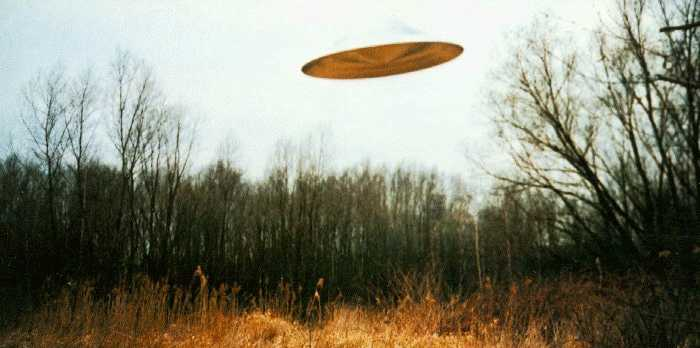

À Qujing (Yunna, sud-ouest de la Chine) Les pilotes d'une unité
des
Forces Aériennes Chinoises aperçoivent à 20 km environ un objet de couleur orange, comme suspendu à une
altitude de 7000 m. Engageant la poursuite, les appareils suivent le phénomène durant à la
vitesse de 900 km/h, avant qu'il ne disparaisse.
À Saint Gilles-Croix de Vie (Vendée), un témoin
observe depuis sa chambre un phénomène lumineux qu'il décrit comme étant de grandes dimensions et ressemblant à deux
larmesSEPRA : PAN classé C.
Au même endroit et à la même heure que 3 jours auparavant, d'autres équipages de la même
unité
observent un objet situé à 6000 m d'altitude, qui change de couleur, passant du rouge orangé au blanc de façon
intermittente. À nouveau, la chasse est ordonnée et engagée durant 8 mn, après quoi le phénomène effectue un
mouvement de rotation en prenant de la vitesse pour disparaître vers le nord.

Photographie du 8 mars en Allemagne
À Braunschweig (Allemagne), photographie (ci-contre).
Une lumière vive flotte au-dessus de Bispham (Grande-Bretagne),
à 26
km de l'aéroport le plus proche. L'objet, filmé au caméscope par Stephen Woolhouse, n'émet aucun bruit ni
clignotement. Après recherches, il est confirmé qu'aucun engin identifié n'avait survolé l'endroit ce jour-là.
L'analyse plan par plan du film n'a pas permis de trouver une explication rationnelle au phénomène.
À Collonges (Ain), un témoin à son poste à la gare de péage
d'autoroute observe durant environ un phénomène silencieux avançant lentement et ayant l'allure et
la forme d'un train avec trois feux ayant une traînée. Un article de presse faisant état de plusieurs témoignages a
incité le témoin à faire une déposition, mais aucun autre témoin n'a pu être retrouvé SEPRA : PAN de type C.
Dans le milieu de la nuit, dernières observations de la vague de "triangles volants" dans le ciel de
Grande-Bretagne, par des policiers en faction ou des militaires en faction. Les descriptions ressemblent aux
observations belges : trois lumières se déplaçant en formation parfaite où, à l'occasion de témoignages plus
précis, un immense ovni triangulaire illuminé à chacun de ses angles. De nombreux observateurs signalent
fréquemment une caractéristique supplémentaire : un bourdonnement sourd semble émaner de l'appareil.
À la base de Cosford (Shropshire), un peloton de garde entier voit passer l'ovni
exactement à l'aplomb de la base. Rapidement, une vérification des mouvements d'aéronefs est demandée auprès des
contrôleurs du trafic aérien : aucun avion, tant civil que militaire, à signaler dans la zone concernée.
L'officier chargé de la météo à une autre base de la RAF située à l, à
quelques km seulement de la base de Cosford, ayant appris qu'un ovni avait été
signalé au-dessus de la base voisine, sort du bâtiment afin de se rendre compte de visu. À sa
stupéfaction, il voit alors un appareil de forme triangulaire se diriger directement vers la base, accompagné
d'un vrombissement sourd. Selon son estimation, l'appareil a pratiquement la taille d'un Boeing 747. L'appareil
projette un faisceau lumineux vers le sol, balayant le sol de droite à gauche comme s'il cherchait quelque
chose. Puis le faisceau s'éteint et l'appareil poursuit sa route, en survolant la base à faible altitude.
Des pêcheurs de l'ouest et du sud du Pays de Galles observent au-dessus de Brigewater (Somerset) un très gros objet en forme de catamaran voler dans leur
direction et passer sans bruit au-dessus d'eux à une hauteur de 240 m environ. Ils voient deux lumières blanches
très brillantes à l'arrière et deux lumières oranges au milieu.